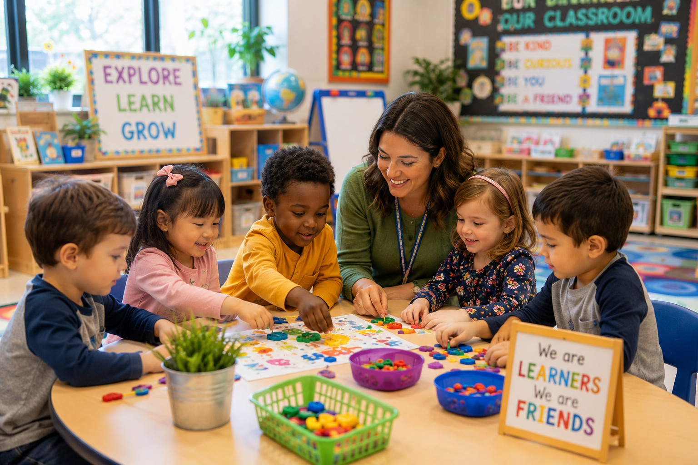

Literacy
Language & Literacy
Develop vocabulary, storytelling, phonological awareness, alphabet knowledge, and early writing through playful experiences.
Creative, engaging lesson plans for children ages three to four that inspire curiosity, imagination, confidence, and joyful learning through hands on exploration, meaningful play, and developmentally appropriate experiences.
Preschool classrooms thrive when children are encouraged to ask questions, explore materials, create, imagine, and solve problems together. Every lesson is designed to nurture curiosity while strengthening language, mathematics, science, creativity, and social emotional development through purposeful play.

Every Preschool lesson is intentionally designed to support children's development while encouraging joyful exploration.
Children learn best when they feel safe, respected, encouraged, and connected to caring adults.
Questions, investigations, and hands on experiences encourage children to think critically and solve problems.
Play builds language, creativity, mathematics, science, cooperation, and confidence every day.
Lessons support cognitive, physical, language, creative, and social emotional growth together.
Weekly Lesson Plans
Learning Experiences
Learning Centers
Play Based Learning
Explore engaging lesson plans that inspire creativity, curiosity, communication, and school readiness through meaningful play.
Develop vocabulary, storytelling, phonological awareness, alphabet knowledge, and early writing through playful experiences.

Count, sort, compare, measure, recognize patterns, and solve everyday mathematical problems.

Encourage children to investigate, observe, predict, question, and experiment through hands on exploration.

Paint, sculpt, draw, dance, sing, build, and express ideas through open ended creative experiences.
Meaningful investigations encourage children to build knowledge while following their natural curiosity.
Explore homes, schools, bridges, neighborhoods, and construction through engineering and dramatic play.
Investigate floating, sinking, rain, rivers, oceans, ice, and water conservation.
Observe plants, insects, trees, flowers, weather, and seasonal changes outdoors.
Learn about pets, habitats, animal life cycles, and caring for living things.
Compare fabrics, weather clothing, dressing skills, and clothing from different cultures.
Celebrate relationships, traditions, homes, neighborhoods, and family experiences.
Well organized learning centers encourage independence, creativity, collaboration, and problem solving.
Design, build, compare, and engineer structures while strengthening mathematical thinking.
Create cozy reading spaces with quality literature, puppets, storytelling props, and writing materials.
Provide open ended materials that inspire creativity, imagination, and self expression.
Encourage observation, investigation, measurement, experimentation, and scientific thinking.
Support social development through pretend play, costumes, puppets, and imaginative role playing.
Offer journals, alphabet materials, labels, drawing supplies, and opportunities for authentic writing.
Intentional teaching builds confidence while preparing children for future learning through meaningful experiences.
Recognize letters, enjoy books, build vocabulary, hear sounds, and begin emergent writing.
Count, compare, sort, classify, identify shapes, recognize patterns, and solve simple problems.
Practice cooperation, empathy, communication, emotional regulation, and positive friendships.
Ask questions, make predictions, investigate ideas, and solve problems through exploration.
Rich language experiences help children become confident communicators, storytellers, readers, and writers.
Read engaging children's books while encouraging predictions, discussions, and new vocabulary.
Ask open ended questions that encourage children to explain their ideas and share experiences.
Provide journals, alphabet cards, clipboards, and writing materials throughout the classroom.
Use puppets, story baskets, flannel boards, and dramatic play to build oral language skills.
Children develop mathematical thinking through hands on exploration, games, and everyday experiences.
Count objects, recognize numerals, compare quantities, and build one to one correspondence.
Explore length, height, weight, capacity, and size using classroom materials.
Create repeating patterns with colors, shapes, sounds, movements, and loose parts.
Identify, compare, and build with two dimensional and three dimensional shapes.
Scientific thinking grows through questioning, observing, experimenting, and discovering how the world works.
Observe carefully, make predictions, test ideas, and discuss discoveries together.
Investigate plants, insects, animals, habitats, seeds, and the changing seasons.
Explore water, magnets, ramps, light, shadows, motion, and simple machines.
Observe weather, rocks, soil, clouds, landforms, and natural materials.
Children communicate ideas, emotions, and creativity through open ended artistic experiences.
Experiment with brushes, rollers, sponges, watercolor, tempera, and mixed media.
Combine recycled materials, paper, fabric, nature items, and loose parts into original artwork.
Encourage sketching, observation drawing, journaling, and creative illustration.
Build with clay, play dough, cardboard, recycled materials, and natural objects.
Music encourages language, memory, coordination, creativity, and joyful participation every day.
Sing songs during transitions, group time, greetings, cleanup, and classroom celebrations.
Play drums, rhythm sticks, shakers, bells, tambourines, and homemade instruments.
Move with scarves, ribbons, streamers, and imaginative music from many cultures.
Hop, skip, balance, stretch, crawl, jump, and act out stories through movement.
Outdoor environments provide meaningful opportunities for exploration, scientific discovery, healthy movement, and imaginative play.
Observe birds, insects, plants, trees, flowers, weather, and seasonal changes.
Strengthen coordination through climbing, balancing, jumping, throwing, catching, and obstacle courses.
Plant seeds, care for flowers, observe growth, and investigate living things together.
Collect natural treasures, compare textures, investigate habitats, and ask scientific questions.
Families play an essential role in children's learning. Meaningful partnerships strengthen school readiness and create lasting learning experiences beyond the classroom.
Encourage families to enjoy books every day while asking questions, discussing pictures, and retelling favorite stories.
Cooking, grocery shopping, cleaning, and gardening all provide opportunities for counting, language, and problem solving.
Visit parks, collect natural materials, observe wildlife, and investigate seasonal changes together.
Share children's artwork, writing, discoveries, and classroom experiences while celebrating their growth.
Every Preschool lesson intentionally supports children's development across all Head Start ELOF domains.
Build confidence, empathy, friendships, emotional regulation, and positive classroom relationships.
Strengthen vocabulary, conversations, storytelling, comprehension, writing, and emergent reading skills.
Develop reasoning, mathematical thinking, scientific inquiry, creativity, and problem solving.
Support fine motor coordination, gross motor movement, healthy habits, and self care skills.
Encourage curiosity, persistence, flexibility, initiative, creativity, and independence.
Foster cooperation, communication, respect, and teamwork throughout the classroom community.
Authentic assessment allows teachers to celebrate children's growth while planning meaningful next steps.
Observe children during investigations, conversations, routines, and independent play.
Save artwork, writing samples, photographs, and classroom documentation throughout the year.
Use observations to extend children's interests and individualize future learning experiences.
Partner with families by sharing children's accomplishments and documenting developmental growth.
Purposefully designed classrooms encourage exploration, independence, collaboration, and creativity.
Arrange materials on low shelves so children can independently choose, explore, and return materials.
Include wood, baskets, stones, shells, plants, and loose parts that inspire investigation.
Rotate books, materials, provocations, and investigations to maintain children's curiosity.
Display artwork, photographs, writing, and documentation that reflects children's thinking.
Support intentional teaching with practical classroom resources and planning tools.
Flexible lesson plan templates designed around children's interests and curriculum investigations.
Document children's conversations, learning, developmental milestones, and classroom discoveries.
Download classroom labels, visual supports, learning center signs, and family resources.
Continue growing through coaching, collaboration, reflection, and ongoing professional learning.
Exceptional preschool classrooms are built by educators who continue learning, reflecting, collaborating, and growing throughout their careers.
Create engaging learning experiences that reflect children's interests, strengths, developmental stages, and cultural backgrounds.
Use observations, documentation, and reflection to strengthen teaching practices and improve classroom experiences.
Partner with colleagues, coaches, specialists, and families to support every child's success.
Celebrate classroom successes while seeking new ideas that inspire meaningful learning every day.
Download classroom resources that simplify planning, documentation, assessment, and family communication.
Plan investigations, learning centers, small groups, and intentional teaching experiences.
Record children's conversations, interests, developmental progress, and learning through play.
Strengthen family partnerships with simple activities that extend learning into everyday routines.
Create organized, inviting classrooms with printable center labels and visual supports.